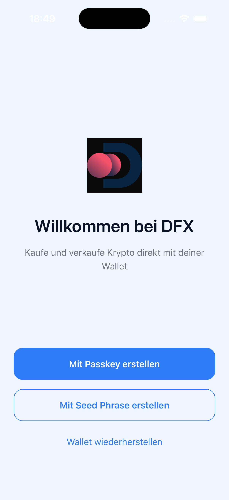
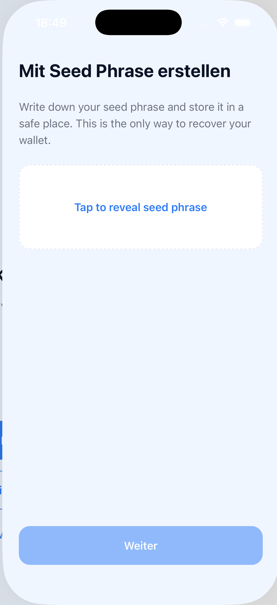
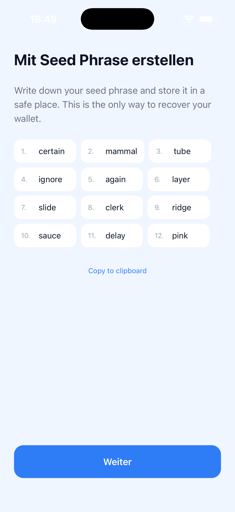
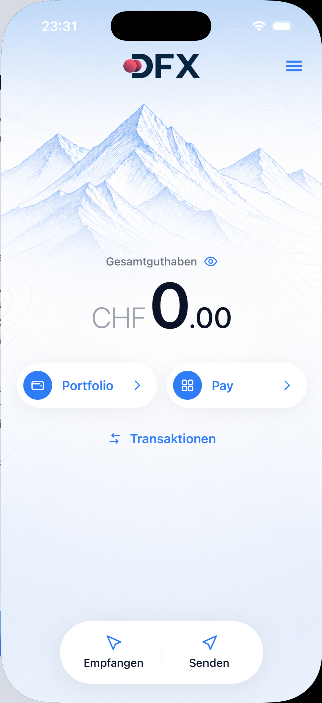
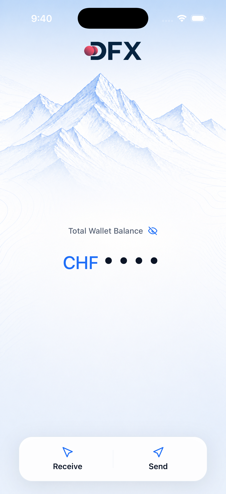
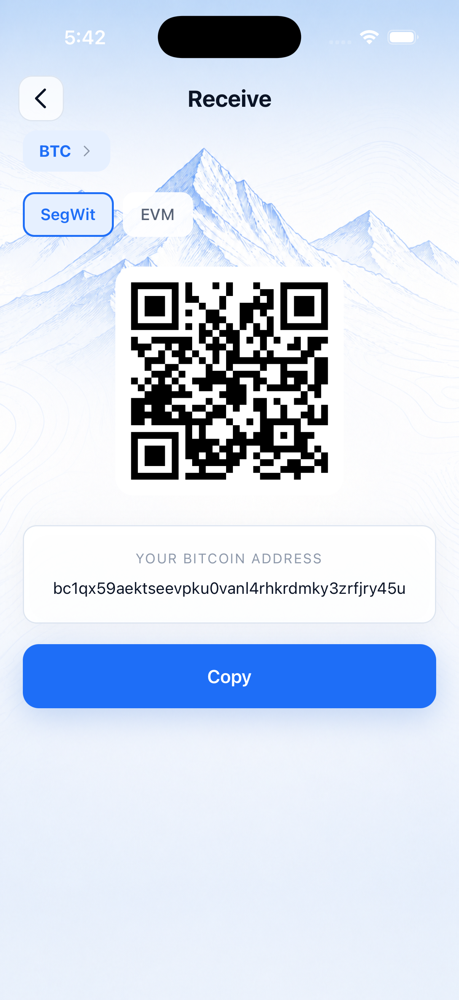
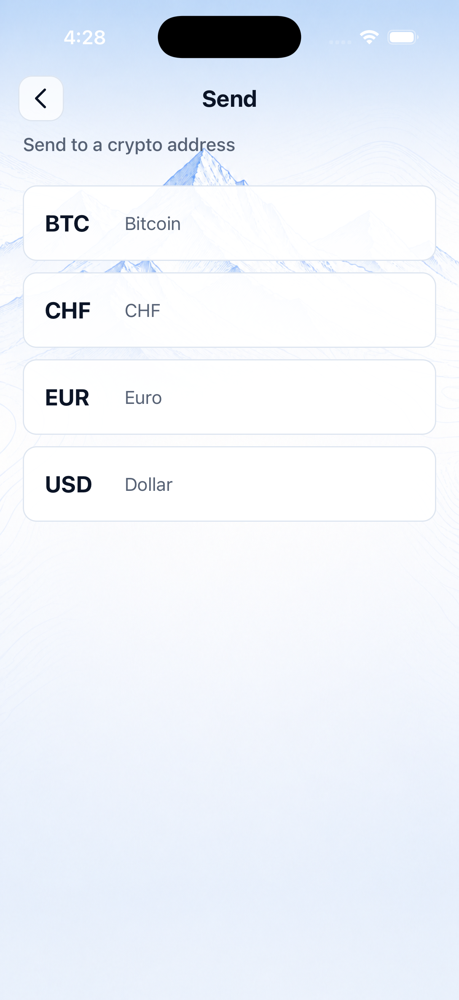
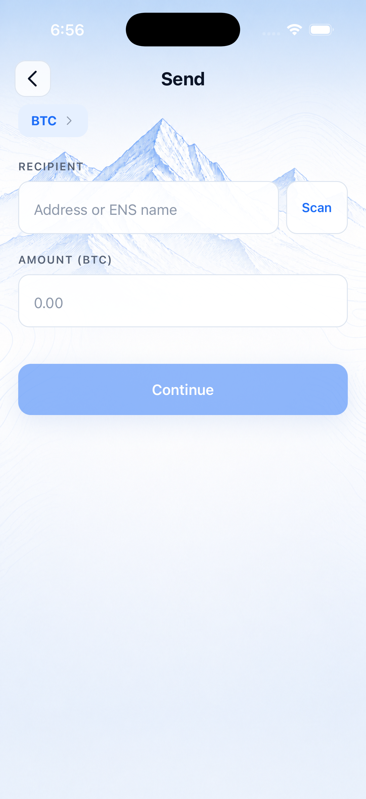

DFX Wallet — Handbuch
User-Doku und Test-Doku in einem. Jedes Bild auf dieser Seite ist gleichzeitig eine
Visual-Regression-Baseline aus e2e/__baselines__/, die in CI bei jedem PR
pixelgenau verglichen wird. Wenn das Handbuch aktuell aussieht, ist die Live-App es auch
— und umgekehrt.
Single Source of Truth
Die kanonischen Baseline-Bilder liegen unter
e2e/__baselines__/<name>.png und sind das einzige committed Asset.
Die Bilder, die dieses Handbuch zeigt, sind keine Kopien — die
<img>-Tags zeigen direkt mit relativen Pfaden auf die Baselines. Kein
Drift möglich.
Aktualisieren der Baselines erfolgt über die Visual Regression-Workflow-Runs:
ein fehlendes oder pixelgenau abweichendes Snapshot lädt jest-image-snapshot in den
detox-artifacts-Bundle hoch, von dort kopiert ein Maintainer das PNG nach
e2e/__baselines__/ und committet. Details in
docs/visual-regression.md.
MVP-Pfad vs. Feature-gated: Die App liefert jede deferred Funktion hinter einem
EXPO_PUBLIC_ENABLE_*-Flag aus, das im MVP-Build standardmäßig aus ist.
Dieses Handbuch zeigt den MVP-Pfad: Welcome → Create-Wallet → SetupPinDisabled-Bridge
→ Dashboard → Receive/Send. PIN-Setup, Restore-from-Seed, Legal-Disclaimer,
Hardware-Wallet und Multi-Sig kommen, sobald die jeweiligen Flags shippen — die
Baselines existieren bereits unter setup-pin.png, verify-pin.png,
restore-wallet.png etc., und die Maestro-Flows tragen
feature-*-Tags, die der Workflow-Filter --include-tags mvp
heute ausblendet.
01Welcome
{kind=link}
Der allererste Screen nach fresh install. Create with Seed Phrase startet den
einzigen MVP-Onboarding-Pfad — Restore-from-Seed und Passkey-basiertes Onboarding sind
hinter EXPO_PUBLIC_ENABLE_RESTORE bzw. _PASSKEY gegated und
werden im MVP-Build nicht gerendert.

welcome-restore-toggle wäre hier — er rendert nur bei aktiviertem
FEATURES.RESTORE || FEATURES.PASSKEY.
02Wallet erstellen — Seed Phrase
Tap auf Create with Seed Phrase öffnet den Seed-Reveal-Screen. Der User muss
seine 12-Wort-Mnemonic einsehen, bevor er weitergehen kann — die Continue-CTA
ist disabled bis der Reveal-Button gedrückt wurde. Anschließend springt der Flow im
MVP-Build via SetupPinDisabled-Stub direkt zum Dashboard (kein PIN- oder
Legal-Screen dazwischen).


WDK-Init nach Continue: der Tether-WDK initialisiert beim ersten Wallet-Setup
jede Chain (Bitcoin SegWit, Taproot, Plasma, Ethereum & L2s, Solana, TON, TRON,
Spark). Auf einem frischen CI-Simulator kann das bis zu 120s dauern — der Maestro-Flow
und der Detox-Test gewähren explizit --withTimeout(120_000).
03Dashboard
Die Landing-Surface nach Onboarding. Im MVP-Build sind Receive und Send die einzigen Action-Pills — Portfolio, Pay, Transactions, Settings und Multi-Sig leben hinter ihren jeweiligen Feature-Flags. Das Augen-Icon neben „Total Wallet Balance" toggelt die Balance auf vier Bullets (für Public-Privacy beim Demo).


CHF ●●●●. State ist nur in-memory, beim
nächsten Re-Mount der Tab-Komponente zurück auf sichtbar.
04Bitcoin empfangen
Zwei Schritte: Asset wählen → QR-Code anzeigen. BTC ist der einzige MVP-Asset mit
mehreren Chains (SegWit und EVM/Wrapped); die Stablecoins (CHF, EUR, USD) shippen nur
auf Ethereum, der Chain-Selector ist dort versteckt. Taproot- und Lightning-Layer sind
hinter EXPO_PUBLIC_ENABLE_DFX_BACKEND gegated.

05Bitcoin senden
Drei Schritte hat der echte Send-Flow: Asset → Input (Empfänger + Amount + Network-Fee)
→ Confirm. Die MVP-E2E-Suite stoppt am Input-Step — der Confirm-Button auf der
Bestätigungsseite ruft handleSend() auf und broadcastet eine echte
Transaktion, das gehört nicht in einen Smoke-Test. Die Recipient-/Amount-Validierung
(mind. 26 Zeichen, > 0 für Continue) ist hingegen ohne Tx-Risiko testbar.


Confirm wird nie getappt: beide Maestro- und der Detox-Flow assertieren den
send-confirm-button nur auf Sichtbarkeit. Ein Klick würde
handleSend() aufrufen und auf Testnet eine echte Transaktion broadcasten.
Die Recipient-/Amount-Validation, Fee-Estimate-Loading und Cancel-Round-Trip sind
separat in einem zukünftigen Test mit gemocktem WDK-Signer abgedeckt.
Abdeckung & Triage
Die MVP-Coverage deckt den Onboarding-Pfad und die zwei Wallet-Hauptaktionen (Receive, Send) End-to-End ab. Feature-gated Pfade haben bereits Baselines und Maestro-Flows, werden aber bis zum Shipping der jeweiligen Flags vom CI-Workflow ausgeblendet.
| Bereich | Status | Flags | Maestro | Detox |
|---|---|---|---|---|
| Welcome & Create-Wallet (MVP) | grün | — | 01-welcome, 10-onboarding-create |
3 Baselines |
| Dashboard & Balance-Toggle | grün | — | 22-dashboard-balance-toggle |
2 Baselines |
| Receive (Asset + Chain) | grün | — | 20-receive, 23-receive-chain-switch |
2 Baselines |
| Send (Asset + Input + Chain) | grün | — | 21-send, 24-send-chain-switch |
2 Baselines |
| PIN-Setup & Legal-Disclaimer | gated | PIN, LEGAL |
11-onboarding-create-pin-legal, 13-pin-unlock |
Baselines vorhanden, Tests describe.skip |
| Restore-from-Seed | gated | RESTORE |
02-welcome-restore-toggle, 12-onboarding-restore |
Baselines vorhanden |
| Confirm/Send-Transaktion | offen | — | — | braucht gemockten WDK-Signer |
| Hardware-Wallet (BitBox02) | offen | HARDWARE_WALLET |
— | Maestro kann BLE/USB nicht treiben |
| Multi-Sig | offen | MULTISIG |
— | — |
Wie Baselines aktualisiert werden
Wenn eine intendierte UI-Änderung eine Baseline brechen würde:
- Lokal:
rm e2e/__baselines__/<name>.png, dannnpm run e2e:test:ios. jest-image-snapshot schreibt die neue Baseline. - CI: PR pushen, der Visual-Regression-Run failt, das fehlende Snapshot landet im
detox-artifacts-Bundle, von dort nache2e/__baselines__/kopieren und committen.
Details zum Workflow-Trigger (das needs-visual-Label, Nightly-Cron) sowie
zu Detox-Pitfalls wie der strikten toBeVisible-Heuristik (>75% des
Elements müssen sichtbar sein) stehen in
docs/visual-regression.md. Maestro-Konvention, Tag-System und CI-Setup in
docs/maestro.md.